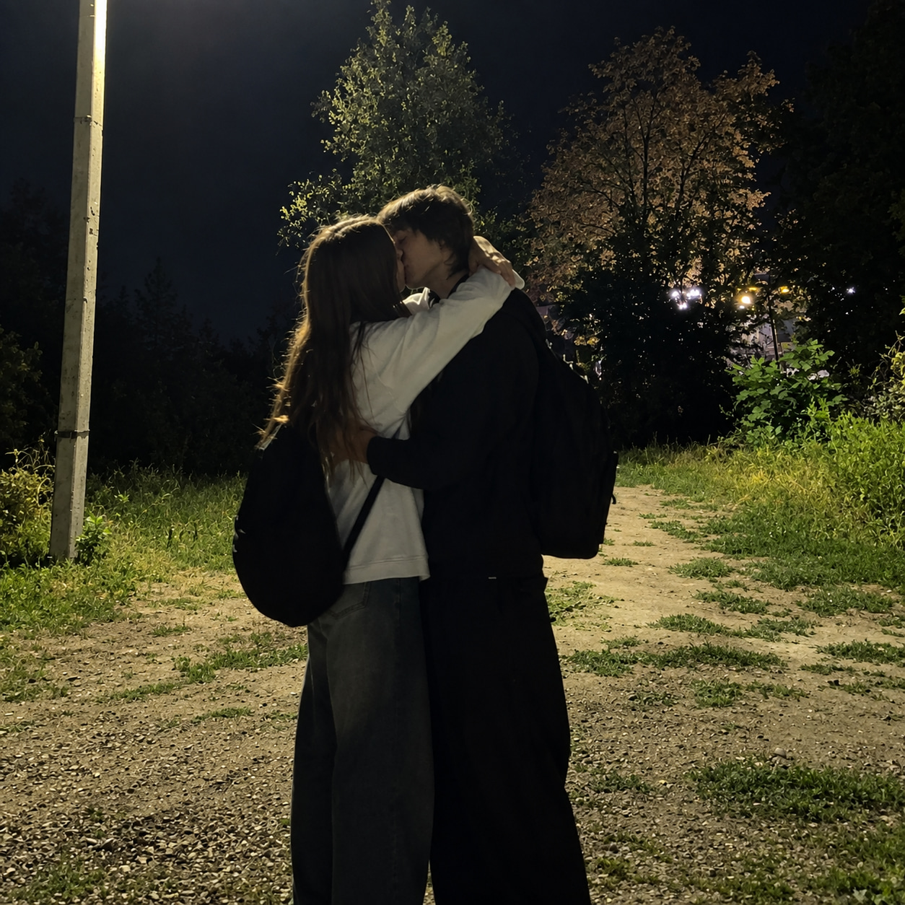

до этого
Два человека
Каждый со своей историей, случайно оказавшиеся рядом.
архив одного чувства
Не громкое обещание, а тихое «давай попробуем». И с того дня каждый момент стал чем-то большим.
листать историю ↓
точка отсчёта
День, когда мы начали встречаться. С него всё стало «нашим».
Каждый со своей историей, случайно оказавшиеся рядом.
Один вечер, после которого у нас появилось общее завтра.
Самая любимая часть — всё, что нам ещё предстоит.
наша дата
День, когда мы начали встречаться
если считать
И каждое из них — причина улыбаться. Счётчик обновляется сам.
из личного архива
Спасибо, что именно с тобой у меня столько моментов, которые хочется хранить.
Лёша ♡